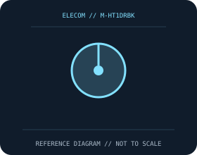

[ MICE AND TRACKBALLS // IDENTIFIED COMPONENT ]
ELECOM HUGE Wireless Trackball
Large right-handed index-finger trackball with a 52 mm ball, palm support, and eight assignable controls.

MODEL IDENTIFICATION: M-HT1DRBK. Confirm printed identifiers, revision, region, and included accessories before repair or compatibility claims.
Model specifications
| Catalog leaf | Mice and trackballs |
|---|---|
| Exact model / identifier | M-HT1DRBK |
| Sensor and switches | Optical tracking with selectable 500, 1,000, or 1,500 DPI modes. Main click switches are Omron components as identified for this model by ELECOM; the trackball has eight buttons including scroll controls. |
| Wired/wireless interface; polling and DPI | 2.4 GHz wireless USB receiver; not Bluetooth or wired. ELECOM Mouse Assistant enables button and pointer customization on supported Windows/macOS releases. |
| Dimensions and weight | 114.7 × 181.9 × 57.2 mm; about 260 g without batteries; ball diameter 52 mm. |
| Host and driver compatibility | USB receiver offers basic HID use on compatible hosts. Advanced remapping requires ELECOM Mouse Assistant and a supported operating system; confirm the correct driver build and M-HT1DRBK variant. |
| Power and battery | Two replaceable AA cells; no internal charging. ELECOM quotes up to 534 days in low-energy mode under its test conditions; cell type, mode, and usage change runtime. |
| Revision and SKU caveats | M-HT1DRBK is the wireless USB-receiver model; distinguish it from wired M-HT1URBK and other regional HUGE variants. Check receiver identity, driver support, and product label before replacing parts. |
Preservation and service
Keep the receiver, cable, battery cover, and included accessories with the identified mouse. Clean optical apertures and trackball contacts without introducing liquid; record host OS, driver/firmware version, connection mode, and battery condition during tests.
Published maximum DPI, polling, click-life, and runtime values are manufacturer figures under specific test conditions, not a guarantee of individual-unit performance.
Manufacturer sources
- ELECOM USA HUGE wireless trackball productManufacturer product or support documentation; confirm the exact SKU, region, and revision against the device label.
- ELECOM Mouse Assistant official downloadsManufacturer product or support documentation; confirm the exact SKU, region, and revision against the device label.
Manufacturer documentation changes over time; retain the applicable manual and revision with the physical equipment record.